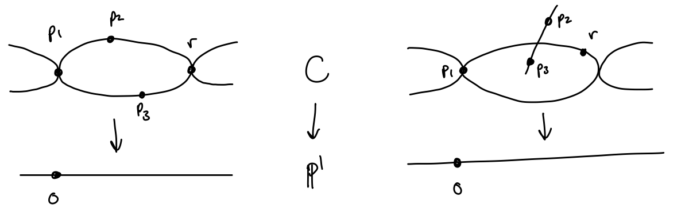
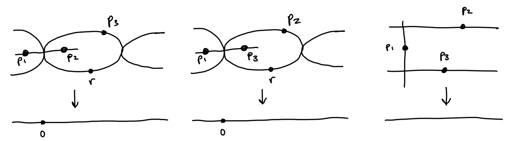
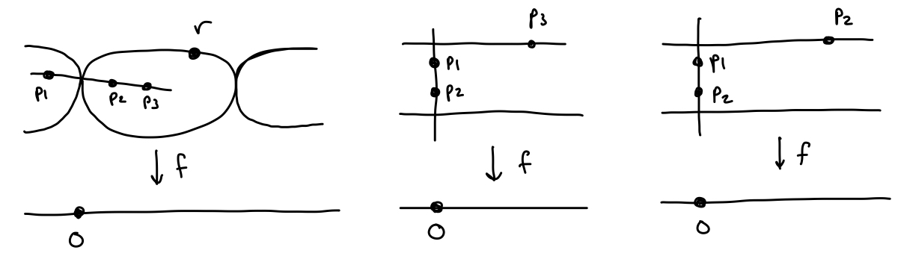

Goal: Develop localization proceedure to compute log GW invariants
ACTIVE compute GW invariant count for P1 and P2 target in low degree (1 and 2) for small number of marked points
About contact order at the nodes: when \(Q = \mathbb N\) the element \(\rho_q \in Q\setminus \{0\}\) is a number \(e_q \in \mathbb N\setminus \{0\}\), and the monoid \(Q\oplus_{\mathbb N}\mathbb N^2\) is isomorphic to the submonoid \(S_{e_q}\) of \(\mathbb N^2\) generated by \((0,e_q), (e_q,0), (1,1)\). Abstractly it is isomorphic to
\begin{align*} S_{e_q} = \langle a_1, a_2, a_3 ~|~ a_1 + a_2 = e_qa_3\rangle. \end{align*}This is in the notation of the contact order note.
- What are the possible contact orders of marks on a contracted component?
- Does the balancing condition imply that when \(q\) is a node on \(C_0\cap C_1\) irreducible components, that the contact order of \(q\) “considered on \(C_0\)” must be the negative of the contact order of \(q\) “considered on \(C_1\)”? This seems to be supported by example calculations.
- For examples see
Contact orders of marks on contracted component
Say you have a component \(C_0\) with some marks \(p_1,...,p_n\) and nodes \(q_1,...,q_m\) which is contracted to a point on \(X\) with divisorial log structure. Necessarily it must be mapped to somewhere on the divisor \(D\) of \(X\) as otherwise the map won’t be a log map – look at \(f^\flat\) on the log structures (can’t see this on level of ghost sheaves). Say the point \(C_0\) is mapped to is \(x\) and \(\overline{\mathcal M}_{X,x} = \mathbb N\). Choose \(s =1 \in \Gamma(X, \overline{\mathcal M}_X)\) and you get from the degree/contact order formula \[\deg((f^*\mathcal L_s)|_{C_0}) = 0 = -\sum u_{p_i} - \sum u_{q_j}.\] So the only condition on the contact orders of the marks is that this sum is zero. The nodes will additionally need to satisfy the balancing condition.
Examples of localization computations for stable log maps
Target = P1|[0] + [∞], degree = 1, genus = 0, # marks = 3, u = (1,1,0)
Here \(X = \mathbb P^1\) with toroidal log structure \(D = [0] + [\infty]\)and \(\beta = ([\mathbb P^1], g=0, n=3, u_1 = u_2 = 1, u_3 = 0)\). Note that \(u_1=u_2 = 1\) implies by the degree/contact order formula that \(u_3 = 0\); \[\deg f^*\mathcal O(-D) = -2 = -(u_1 +u2+u_3) = -2 - u_3, \] so \(u_3 = 0\). Thus we can put \(p_3\) the third marked point wherever we want so long as it doesn’t collide with the divisor of \(\mathbb P^1.\)
Consider the situation of ordinary stable maps and the generic situation of a single \(\mathbb P^1\) component on the source curve. After modding out by automorphisms we may assume that \(0\mapsto 0\), \(1\mapsto 1\) and \(\infty \mapsto \infty\); i.e. that \(f:C\to \mathbb P^1\) is the identity. We then put the marked points anywhere we want on the source curve and end up with a \(\overline M_{0, 3}(\mathbb P^1, 1)\) resembling \(\mathbb P^1\times \mathbb P^1\times \mathbb P^1\) blown up along its diagonals.
To lift one of these ordinary stable maps to a log map, we must have \(\{p_1,p_2\} = \{0,\infty\}\). We still have the freedom of putting \(p_3\) wherever we want so long as it doesn’t collide with the divisor. This means we should have two connected components for \(LM(\mathbb P^1, \beta)\); one corresponding to \(p_1=0, p_2 = \infty\) and one to \(p_1 = \infty, p_2 = 0\). Each of these should be a \(\mathbb P^1\), corresponding to the choice of \(p_3\) along the generic source curve. The points corresponding to \(0\) and \(\infty\) in the moduli space will be represented by reducible curves with a node at \(0\) or \(\infty\) respectively, with a contracted component containing both \(p_i\) and \(p_3\) for \(i=1\) or \(2\). Thus
\(LM(\mathbb P^1, \beta) = \mathbb P^1\sqcup \mathbb P^1\).
Calculating a GW Invariant
Consider a class \(\alpha = [p] \in A_0(X) = A_0(\mathbb P^1)\), and assume for starters that \(p\not\in \{0,\infty\}\). Let \(M_1\) and \(M_2\) be the two components of \(LM\), two copies of \(\mathbb P^1\). The GW invariant associated to \(\alpha\) is then
\begin{align*} I_\beta(\alpha) &= \int_{LM}e_1^*(\alpha) = \int_{LM} [p^1] + [p^2] \\ &= ([M_1] + [M_2]) \cap ([p^1] + [p^2]) = [M_1]\cap [p^1] + [M_2]\cap [p^2] \\ &= 1 + 1 = 2 \\ \end{align*}Calculating the same GW invariant with localization
Attempted to do this in paper notebook but have questions.
- I think the class \(e^*_1(\alpha)\) should be expressable in terms of line bundles and Chern classes; it ought to be \(e^*_i(c_1(\mathcal O(1)))\) methinks when \(\alpha = [p]\). It is then obvious how to move into the equivariant setting.
- The fixed locus of \(LM\) in this case should be four points, if I’m right about the moduli space.
- What is \(c^T_{top}(T_pLM)?\) I think it should be \(\lambda\) where \(\lambda\) is the generator of \(\Lambda_{\mathbb C^*} = \mathbb Z[\lambda]\) and is \(c_1^T(\mathcal O(-1)).\) Understand this. Sign might change depending on whether \(p = 0\) or \(p=\infty\).
How do you move from \(e^*_i\) to equivariant homology? Might have an answer in the Mirror Symmetry Cox and Katz book.
Need to recall localization stuff; do some exercises. Creating the equivariant cohomology topic page for it
Target = P1|[0], degree = 2, genus = 0, # marks = 3, u = (2,0,0)
We’re looking at \(M = M(\mathbb P^1, \beta)\) with
- Divisorial log structure on \(\mathbb P^1\) relative to divisor \(D = [0]\). We’ll refer to the point \(0\) in \(\mathbb P^1\) as \(D\).
- \(\beta=(2[\mathbb P^1], g=0, n = 3, u_1 = 2, u_2 = u_3 = 0)\)
- Let \(T = \mathbb C^*\) act on \(\mathbb P^1\) via character \(\chi\); in coordinates this will be \(t\cdot [x:y] = [x:\chi(t)y]\).
We’re abusing notation here by writing the contact orders as integers; in this case they are maps \(\mathbb N\to \mathbb N\) and are thus specified by the image of \(1\), which is the integer we list.
Structure of the moduli space
There is a useful way to visualize this moduli space through ramification points. Basically, in the generic case, we have a smooth degree 2 map \(f:\mathbb P^1 \to \mathbb P^1\), and any such map must be ramified at 2 points. One of these points must be \(p_1\) by the contact order data, and we’re free to put the other wherever we want, giving us one degree of freedom. We can also place the remaining two marked points anywhere along the source curve, resulting in a dimension 3 moduli space.
- Ramification
A degree 2 map \(f:\mathbb P^1 \to \mathbb P^1\) is ramified at a point \(P\) if and only if the induced map on local rings, DVRs in this case, sends the uniformizer to an element of order 2. Riemann-Hurwitz says \[-2 = 2(-2) + \deg R \implies \deg R = 2\] so the ramification divisor \(R\) is either \([P] + [Q]\) or \(2[P]\) for points \(P,Q\in \mathbb P^1\). We can rule out the second case, as this would imply that the ramification index \(e_P\) of \(f\) at \(P\) is \(3\), which is impossible since \(e_P \leq \deg f\) by a general fact about maps between DVRs. This bound is obvious if one thinks analytically; for \(R\) to be \(2[P]\) we would need \(e_P = 3\), which would mean that \(f\) looks like a degree \(3\) cover in an analytic neigborhood of \(f(P)\).
Thus the only possibility is that \(f\) is ramified at two distinct points \(P\) and \(Q\) each with ramification index \(2\). The choice of these two points entirely determines \(f\) up to isomorphism by the Riemann Existence theorem, so this gives us two degrees of freedom.
- Marked Points
Any stable log curve \((C, f, \mathbf p)\) must satisfy \(f(p_1) = D\) by the contact order requirements. Furthermore, the requirement that \(p_1\) have contact order \(2\) with the divisor and that \(f\) has degree \(2\) implies \(f\) must be ramified at \(p_1\); hence we only get to choose one of the ramifiction points.
The other two marked points are free to move around the source curve. This means we should expect our moduli space to be 3 dimensional and a stable map \(C\to \mathbb P^1\) to be parameterized by the choice of \(p_2\), \(p_3\) and ramification point \(r\).
- Map to \(\mathbb P^1 \times \mathbb P^1\times \mathbb P^1\)
We have a map
\[\varphi: M\to \mathbb P^1_1\times \mathbb P^1_{2}\times \mathbb P^1_{3}=Y\]
defined by \([C, f, \mathbf p]\mapsto (r, p_2, p_3) = (x_1,x_2,x_3)\). What are the fibers of this map? Assume without loss of generality that \(p_1 = 0\) on its component. Additionally define \(V_1\), \(V_{2}\) and \(V_{3}\) to be the coordinate hyperplanes of \(Y\)where either \(r\), \(p_2\) and \(p_3\) is \(0\) respectively. We can form deeper stratum by defining
- \(V_{ij} = V_i \cap V_j\) for \(i,j\in \{1,2,3\}\)
- \(V_{123} = \{(0,0,0)\} = V_{1}\cap V_2 \cap V_3\).
\(r, p_2, p_3\) are all distinct from \(p_1 = 0\), i.e. \((r,p_2,p_3) \in Y \setminus (V_1 \cup V_{2} \cup V_{3})\). This is the generic case and we get a single stable map in the fiber of \(\varphi\). Our source curve will have either one or two irreducible components depending on whether or not \(p_2 = p_3\), but in either case everything is rigid.

Figure 1: We have two different source curves depending on whether \(p_2 = p_3\) or not.
One of \(r\), \(p_2\) or \(p_3 \) is equal to \(p_1\). In this case we still have only one point in the fiber of \((r,p_2,p_3)\). When \(r=0\), the single copy of \(\mathbb P^1\) mapped onto the target \(2:1\) splits into two copies of \(\mathbb P^1\) each mapped isomorphically onto the target and connected by a contracted component containing \(p_1\). Everything is still rigid.

When \((r, p_2, p_3) \in V_{ij}\setminus V_{123}\) for some \(i,j\); i.e. exactly two of \(r, p_2\) or \(p_3\) is equal to \(0\)
We now get something more interesting, as we have a contracted component with four special points; either two nodes and two marks or one node and three marks. Thus in any case we have a \(\overline M_{0,4}\) living over each point in \(V_{ij}\) away from the origin.

- Finally, when \((r,p_2,p_3) = (0,0,0)\), the sole point in \(V_{123}\), the fiber of \(\varphi\) is isomorphic to a copy of \(\overline M_{0,5}\). We have 5 special points on a contracted component, two nodes and three marks, and can choose three of these to be \(0,1,\infty\) up to isomorphism. This leaves two points, say \(p_2\) and \(p_3\), free to move around – exactly a copy of \(\overline M_{0,5}\).
- Explicit description of \(M\) as a blowup of \(\mathbb P^1\times \mathbb P^1\times \mathbb P^1 = Y\)
We keep the notation from the previous section. As suggested by our cases analysis, the moduli space \(M\) should be \(Y\) blown up at \(V_{ij}\) for each \(i